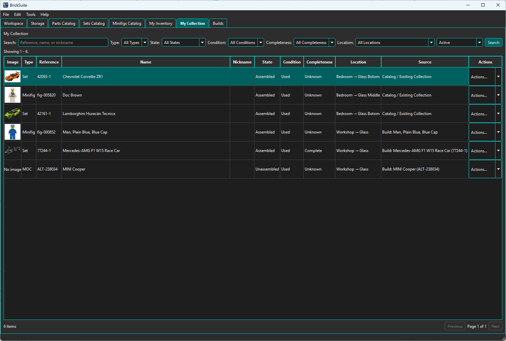

My Collection records individual physical Sets, Minifigs, and MOCs that you own. It is separate from My Inventory, which tracks loose pieces, and from Builds, which track planned and assembled projects.

Use Search and the Type, State, Condition, Completeness, Location, and Active/Archived filters to find an item. Choose Details / Edit to change its state, condition, completeness, Collection location, nickname, or notes.
These dimensions do not imply one another. For example, a Used item can be Assembled and Complete, or Unassembled and Complete; a Partially Assembled item is not automatically Incomplete.
Each physical copy has its own stable Collection record, so multiple copies of the same Set or Minifig may have different nicknames, notes, states, and locations. Archive items you no longer want in the active view; archived items can be found with the Archived filter and reactivated later.
Collection items may be unassigned or stored at an active, Collection-capable leaf location. Storage locations can support Inventory, Collection, both, or serve only as hierarchy containers.
Catalog-backed items show their Set or Minifig identity. Use Add to Collection in Set or Minifig Details to record an owned instance without consuming inventory. A completed Set, Minifig, or MOC Build may also be deliberately added from its Actions menu. The Build remains the historical record, one Collection item may reference it, and the operation does not change inventory or Build status. MOCs use their Build as their authoritative source.
An active catalog-backed Set or Minifig that is Assembled and Complete offers Disassemble to Inventory... in its Actions menu. Review the authoritative required composition, choose a Default Destination and Apply to All, then optionally choose a different active Inventory-capable leaf destination in each row's Move To field. Every required row needs a destination before disassembly can continue.
BrickSuite adds or merges the required Part/Color quantities in loose Inventory, records Inventory History, and changes the Collection State to Unassembled atomically. Condition, Complete assessment, Collection location, nickname, notes, active status, and the Consider for What Can I Build preference remain unchanged.
Catalog spare pieces are excluded. Complete means complete for assembly and does not assert that optional retail-box spares are present. Sealed, partially assembled, incomplete, Build-linked, and MOC items are not supported by this catalog-disassembly workflow.
When shared data comes from a BrickSuite Host, Add, Edit, Archive, and Reactivate are available only when the authenticated Host grants the matching capability. The Host resolves portable Rebrickable Set and Minifig identities, owns Build identities, and validates the selected Host Storage location. A stale edit is rejected so newer Host data is not overwritten.
On a Protocol 1.5 Remote, Set items also expose Consider for What Can I Build when the Host grants that capability. This Host-authoritative preference follows the same advisory, non-consuming rules as local mode and is not offered for Minifigs or MOCs.
If a connection ends before BrickSuite can confirm a save, the dialog reports an unknown outcome. Use Retry Safely to resend the identical operation; BrickSuite reuses its mutation identity so a completed change is not duplicated. Archive is a reversible lifecycle change, not deletion.
Collection has no quantity field: create one item per physical Set, Minifig, or MOC. State, Condition, Completeness, and Location remain independent. Eligible opted-in Assembled Sets may be considered as advisory sources by What Can I Build; Unassembled items are represented by their loose Inventory instead.
Catalog additions default to Used with Unknown completeness. Additions from a completed Build default to Used and Complete because its regular Build requirements were satisfied; this does not assert that catalog spare pieces are present. Review and edit these values to match the physical item.
Disassembling a linked Build synchronizes its Collection state. This does not change Condition or turn Collection into a loose-parts source. A legacy Set Build must be explicitly linked to Sets Catalog before it can become an eligible catalog-backed Collection item.